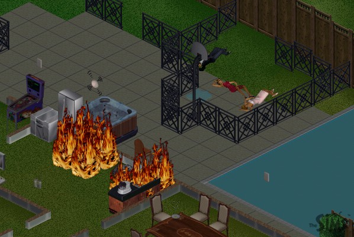
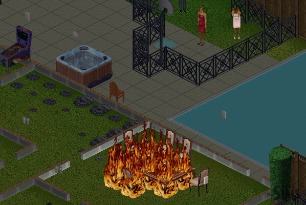
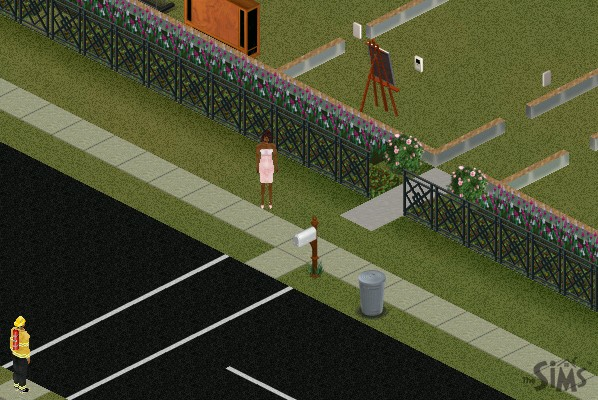
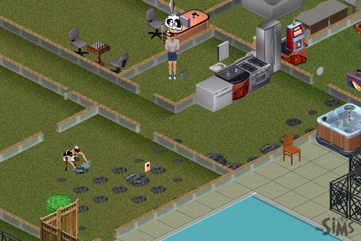
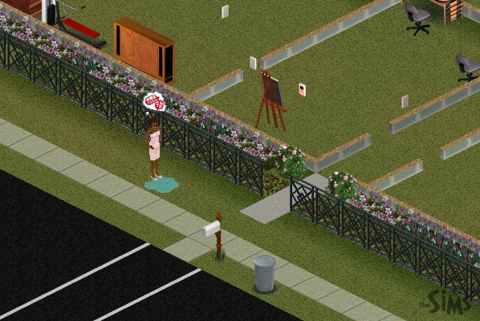

|
The Death of The Sims Part 4
 |
Here's where the physics of the game started to break down. Although the fire alarm is going off, no one is showing up like usual to put the fire out. I wonder why? |
 |
The fire has now spread to the dining room. I forced Syd to another room, because if a Sim tries to fight a fire by themselves, they usually die trying. |
 |
Finally, the mystery is solved. The fireman started to show up, but stopped on the corner across from the house. Also, one of the neighbors is standing out there. Unlike a normal Sim, it wouldn't let me click on her to interact with her. She also wouldn't leave. The physics of the game have started to break down. |
 |
If Syd is so upset about having no friends, you'd think he'd be getting to know his sexy maid a little better. I guess he doesn't like mixing business and pleasure. |
 |
It starts getting weird. The neighbor lady has started to act just as if she's in the cage. She's peeing herself and demanding food. |
Next Page
darkmage@gmail.com
All images and content are ©2000 Jason L. Snowden or
copyrighted by their respective companies
|